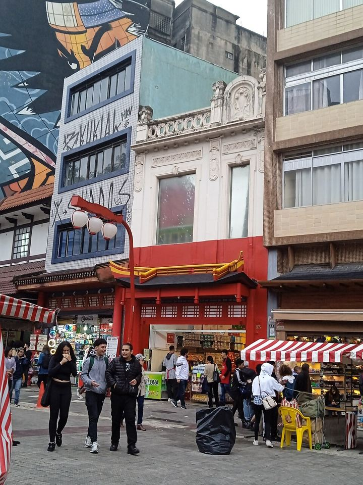
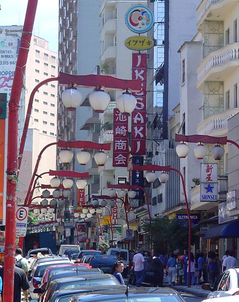
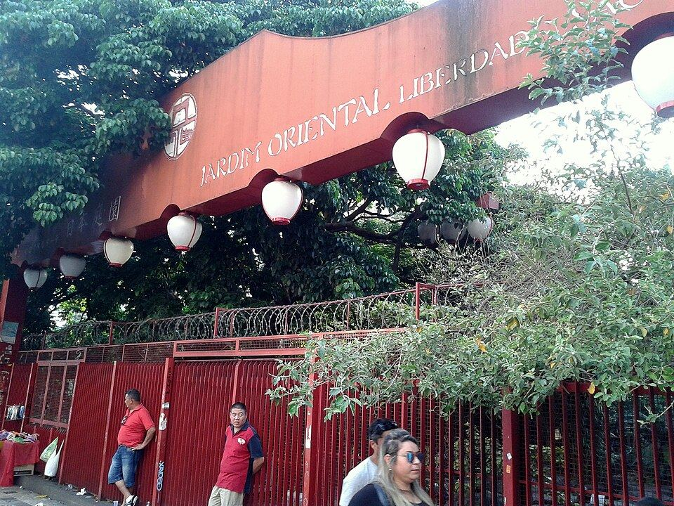
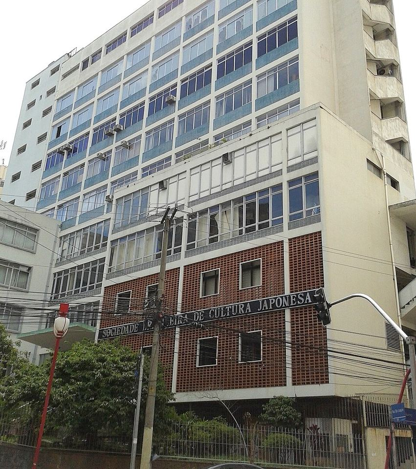

Seus 21 lugares, conferidos um a um, mais 15 opções novas, com dias de funcionamento, previsão do tempo, preços para 4 pessoas e o quanto cada um de vocês deve curtir.
Montei a semana a partir da previsão do tempo e de quem abre em cada dia. Clique numa estação para ver só o que funciona naquele dia.
Previsão Open-Meteo atualizada em 16/11. Ela ainda muda, então confira na véspera (CGE, Climatempo).
Quase tudo na avenida é grátis, mas os museus fecham às segundas. Escolha o dia para ver quem abre. O mapa é esquemático, na ordem da avenida; o número é a altura na Paulista.
Um roteiro grátis, a pé, de terça a sábado: Japan House → Casa das Rosas → Itaú Cultural → MASP (só grátis na terça) → Parque Trianon → IMS. São uns 3 km em linha reta pela avenida, com três estações de metrô no caminho.
As notas de 1 a 3 bolinhas mostram o quanto cada pessoa deve curtir. Nenhum lugar foi descartado: os filtros só ajudam a comparar.
Nove paradas e uns 2 km de caminhada, da Praça da Liberdade até o metrô São Joaquim. Os horários são só referência, começando às 10h. Comida, lojas e museu agradam as três idades.




Grade com todos os lugares. Amarelo significa que não consegui confirmar: ligue ou veja o site antes de sair.
2 inteiras + 2 meias (as filhas com carteirinha de estudante), no dia mais barato da semana em que o lugar abre.
Cada anel é um tempo de viagem sem trânsito pesado. Cada fatia é uma categoria. Clique num ponto para ver os detalhes.
Já vem preenchido com a minha sugestão. Troque à vontade: o total e o "quanto cada um vai curtir" se atualizam sozinhos, e o plano fica salvo neste navegador.